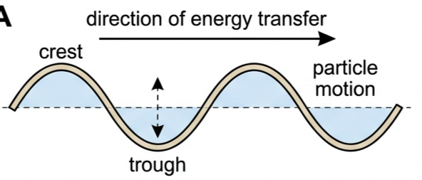
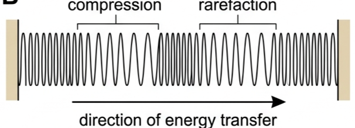
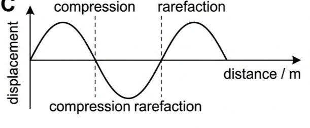
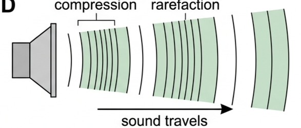
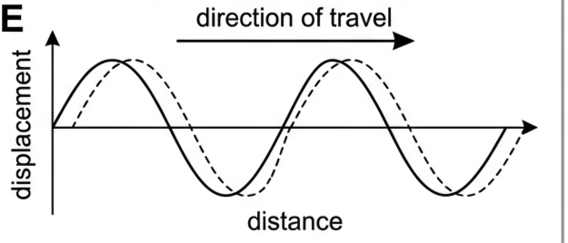
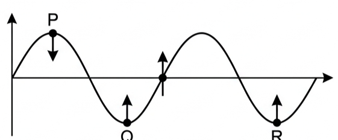
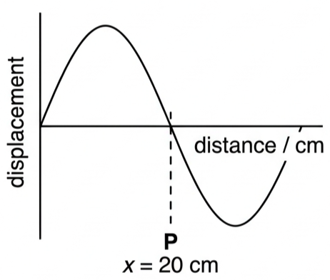
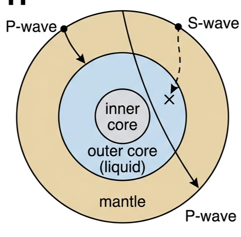
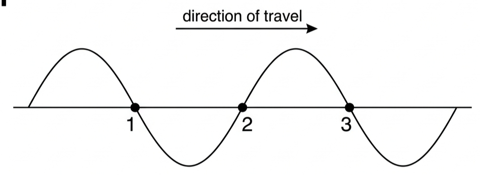

🪢 Hook – flick a rope, watch what actually moves
Pin one end of a rope down and flick the other end up and down once. A hump races away from your hand down the rope's length. But does any piece of rope travel with it? Mark a piece of tape on the rope and watch it — it only moves up and down, then comes back to rest. The hump travels; the rope itself does not.

↕️ Transverse waves
A wave is transverse if the displacement of the particles of the medium is at right angles (perpendicular) to the direction of energy transfer.
On a rope, each segment oscillates up and down while the wave pattern propagates horizontally. The highest points are crests; the lowest are troughs. Each particle performs simple harmonic motion with the same frequency as the wave, slightly out of phase with its neighbour.
Examples: waves on strings and ropes, water surface waves, all electromagnetic waves, seismic S-waves.
↔️ Longitudinal waves
A wave is longitudinal if the displacement of the particles is parallel to the direction of energy transfer. Longitudinal waves consist of alternating compressions and rarefactions.
Push and pull one end of a slinky spring along its length: coils crowd together (compression), then spread apart (rarefaction), and these regions travel along the spring.

| Compression | A region where particles are closer together than at equilibrium — higher density and pressure. |
| Rarefaction | A region where particles are further apart than at equilibrium — lower density and pressure. |
We can still draw a displacement–distance graph for a longitudinal wave — the displacement axis just represents motion along the direction of travel, not sideways: positive means displaced in the direction of travel, negative means displaced against it.

🔊 Sound waves
Sound is a longitudinal mechanical wave, produced when a vibrating surface — a loudspeaker cone, vocal cords, a tuning fork — creates alternating compressions and rarefactions in the surrounding air.

- Medium required: sound cannot travel through a vacuum.
- Typical speed in air: ~340 m s⁻¹ at room temperature, rising slightly with temperature.
- Speed in different media: generally fastest in solids, slowest in gases — particles are closer together and inter-particle forces stronger in solids.
- Audible range: roughly 20 Hz – 20 kHz.
- Pitch is set by frequency (higher \(f\) → higher pitch); loudness is set by amplitude (greater \(A\) → louder).
To give a sense of scale: at the threshold of hearing (1000 Hz), the pressure variation at the eardrum exceeds atmospheric pressure by just 20 μPa (atmospheric pressure is ~10⁵ Pa) — a molecular displacement of about \(10^{-11}\) m, roughly a tenth of a hydrogen atom's diameter.
📡 Mechanical vs electromagnetic waves
| Property | Mechanical waves | Electromagnetic waves |
|---|---|---|
| Requires medium? | Yes — solid, liquid, or gas | No — can travel through vacuum |
| What oscillates? | Particles of the medium | Electric and magnetic fields |
| Type | Transverse or longitudinal | Always transverse |
| Speed in vacuum | Cannot exist in vacuum | \(c = 3.00\times10^{8}\ \text{m s}^{-1}\) |
| Speed depends on… | Medium properties (density, stiffness) | Same for all EM waves in vacuum; varies slightly in materials |
| Examples | Sound, water waves, seismic waves | Light, radio, X-rays, microwaves, gamma rays |
📈 Graph mastery – reading wave-snapshot and displacement graphs
| Graph type | Axes (X, Y) | Shape | What to read |
|---|---|---|---|
| Transverse snapshot (shift method) | distance / displacement | Sinusoidal curve, shifted slightly along travel direction | Each particle moves vertically toward its position on the shifted curve |
| Longitudinal displacement–distance | distance / displacement | Sinusoidal curve | Compressions/rarefactions sit at zero-crossings, not peaks |
This is a key exam skill for transverse waves: given the wave direction and a snapshot, you can find which way any particle moves next. (1) Draw the wave profile (solid) at the current instant. (2) Draw a copy shifted slightly in the direction of travel (dashed). (3) Each particle moves vertically from its position on the solid curve toward its position on the dashed curve.


✍️ Worked example – locating a compression on a graph
A longitudinal wave travels to the right. A displacement–distance graph shows that at point P (\(x = 20\ \text{cm}\)), the displacement is zero and the curve is transitioning from positive to negative. Is P a compression or a rarefaction?

🌍 Real-world: seismic waves reveal Earth's structure
Transverse mechanical waves need a restoring force perpendicular to their direction of travel, which requires the medium to sustain shear stress. Gases and liquids have no fixed molecular structure and cannot resist shear — their molecules simply slide past each other — so only longitudinal (compression) waves can propagate through them.

🚀 HL extension – are water waves really transverse?
We call water surface waves "transverse," but this is a simplification. In deep water, individual water particles actually move in circles (ellipses in shallow water), combining vertical and horizontal motion. The surface appears to move up and down, but the underlying particle motion is more complex — a good example of how a model simplifies reality.
Challenge: if transverse waves need shear stress, why can water — a liquid — support surface waves at all? Answer: it isn't shear stress doing the restoring here — gravity (and surface tension, for very short wavelengths) pulls the raised surface back down, which is why this is a surface effect and not a true bulk-shear transverse wave through the liquid.
⚠️ Trap corner – common mistakes
| Misconception | Correct view |
|---|---|
| Compressions and rarefactions sit at the peaks and troughs of the displacement graph | They sit at the zero-crossings — a compression at zero displacement with negative gradient (for a rightward wave), a rarefaction with positive gradient. At the peaks, displacement is maximum but density is approximately normal |
| Sound is an electromagnetic wave, since it "travels through the air like light does" | Sound is a mechanical longitudinal wave and needs a medium; light is electromagnetic and needs none |
| All electromagnetic waves can be transverse or longitudinal, like mechanical waves | Electromagnetic waves are always transverse — the oscillating electric and magnetic fields are perpendicular to the direction of travel |
| A louder sound has a higher frequency | Loudness is set by amplitude; frequency sets pitch — the two are independent |
Complete the statements:
✓ Longitudinal: particle displacement is parallel to the direction of energy transfer.

✓ A point just behind a crest moves up; a point just ahead of a crest moves down.
✓ A point at a crest is momentarily stationary.
✓ (b) Compression = zero displacement with negative gradient; rarefaction = zero displacement with positive gradient.
✓ (c) Velocity arrows point toward where each particle moves next (use the small-shift method).
✓ EM waves are transverse (oscillating E and B fields); sound is longitudinal (compressions and rarefactions).
✓ EM waves travel at \(c=3.0\times10^8\ \text{m s}^{-1}\) in vacuum, far faster than sound (~340 m s⁻¹ in air).
✓ Longitudinal P-waves rely on compression, which liquids can transmit, so they pass through.
✓ The absence of S-waves through the core is evidence that the outer core is liquid.
✓ (b) Q — at a zero-crossing with negative gradient, neighbouring particles move toward Q, crowding together into a compression.
✓ (c) A quarter period later P returns to zero displacement, moving from the extreme toward equilibrium.